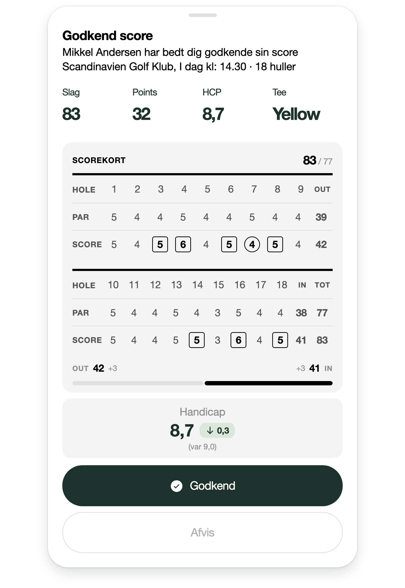

Der er ikke et fast start-handicap i golf. Dit første handicap regnes ud fra din første tællende runde på mindst 9 huller, og det kan højst være 54,0. Derfor starter de fleste nye spillere på 54.
Hvad betyder handicap 54?
54,0 er det højeste handicap, du kan have. Der findes ikke et særligt begynderhandicap over 54. Med handicap 54 får du omkring tre ekstra slag på hvert hul, så du kan spille med vennerne, selv om de er bedre end dig.
Hvor mange slag du præcis får, afhænger af banen og teestedet. Læs mere i Hvad er spillehandicap i golf?.
Hvordan får jeg mit første handicap?
- Spil mindst 9 huller. Banen skal have en course rating og en slope rating, og I spiller efter golfreglerne.
- Tag en markør med. Det er en, der spiller med dig og kan godkende din score.
- Tast scoren hul for hul. Din første score skal registreres hul for hul, ikke som en samlet sum.
- Få scoren godkendt. Når markøren har godkendt den, regnes dit første handicap ud.
Hvordan regnes det første handicap ud?
Har du én, to eller tre scores, tager systemet dit bedste resultat og trækker 2,0 fra. Med fire scores trækkes 1,0 fra, og med fem bruges det bedste resultat, som det er. Når du har 20 scores, er dit handicap gennemsnittet af de otte bedste.
Et eksempel fra Dansk Golf Union: En runde med 34 stableford-point gav et resultat på 55,6. Der blev trukket 2,0 fra, og spillerens første handicap blev 53,6. Lander tallet over 54,0, får du 54.
Skal jeg have golfkørekort for at få handicap?
Nej. Du kan få handicap, uanset om du har bestået golfkørekortet. Golfkørekortet er det, der giver dig lov til at spille andre klubbers baner med dit DGU-kort.
Dansk Golf Union anbefaler klubberne at oprette nye medlemmer som begyndere. Så står du på handicap 54, allerede før din første runde.
Hvor mange slag tæller på et hul?
På din første tællende runde tæller højst par plus 5 på hvert hul. Bruger du 11 slag på et par 4, tæller det som 9. Når du har et handicap, er grænsen netto dobbelt bogey: det antal slag, hvor du får 0 stableford-point. Systemet retter det selv, når scoren er tastet hul for hul.
Tæller mine runder i Golfsocial med til handicappet?
Ja. Når du har forbundet din konto med DGU, kan du registrere tællende runder i Golfsocial. Du vælger en af dem, du spiller med, som markør, og når markøren har godkendt runden, tæller den med i dit DGU-handicap.
Runden kommer også i feedet, så vennerne kan se, hvordan det gik.

Spørgsmål og svar
Hvad er start-handicap i golf?
Der er ikke et fast start-handicap. Dit første handicap regnes ud fra din første tællende runde på mindst 9 huller, og det kan højst være 54,0.
Hvad er begynderhandicap i golf?
Der findes ikke et særligt begynderhandicap over 54. De fleste begyndere starter på 54, fordi det er det højeste handicap, man kan have.
Hvad er max handicap i golf?
Det højeste handicap er 54,0.
Hvad betyder handicap 54 i golf?
Det er det højeste handicap, du kan have. Du får omkring tre ekstra slag på hvert hul, alt efter banen og teestedet.
Hvor mange huller skal jeg spille for at få handicap?
Mindst 9 huller i én tællende runde, med en markør og på en bane med course rating og slope rating.
Skal jeg have golfkørekort for at få handicap?
Nej. Du kan få handicap, uanset om du har bestået golfkørekortet.
Hvilke spilleformer tæller til handicap?
Individuelt slagspil, stableford, maximum score og par/bogey over 9 eller 18 huller.
Golfsocial-appen
Dit golfhjem
Registrér dine runder til dit DGU-handicap, følg din udvikling, og se vennernes runder i feedet. Gratis at spille med vennerne, på iPhone og Android.